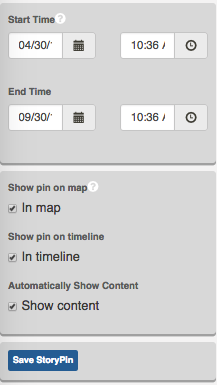

Creating a story¶
In the section Analyzing Data with Exchange, you learned how to display features with a temporal attribute, detailing the specific time an event occurred, or when a feature changed. Exchange now offers a feature that allows you to combine geographic data, text, pictures and multimedia to tell a story.
StoryScapes allows you to compile multiple temporal layers to create your own spatial narrative. Data is added to chapters, which can be separate, but related topics, or can they build off of each other, developing throughout the story. StoryScapes helps you visualize the changes in your data over time.
Compose a story¶
Before creating any story, you will need to ensure you have uploaded all of the layers you will use to create your chapters.
- Select the Maps link on the Boundless Exchange toolbar.
- Click Compose Story in the drop-down menu.

- Click the Compose Story button in the Welcome to the Exchange Composer window.
- Fill out the Story Properties form. Provide as much information as possible, so that others will know what the story is showing. Click the Save button when you are finished with your changes. The story saves as a Map in Exchange.

Create chapters¶
Like a book, map stories are comprised of chapters. You can have one chapter, or multiple chapters to tell your story.
- Click the 1 button to begin working on your first chapter.

- Click the Chapter Info button. Give your chapter a title, and provide a brief summary explaining what the data is showing. You can select a base map appropriate to your data, if you’ve got multiple maps available.
Note: Talk to your Exchange administrator for additional basemap services.

- Click the Save Chapter Info button to create your chapter.
- Click the Back button to return, and continue creating your chapter.
Add Story Layers¶
- Click the StoryLayers button, and select Add a New StoryLayer.

- Select layers from the Explore Layers window to add to your story. You can search for specific layers, browser through all of the layers, just yours, or those you’ve saved as favorites. Click the View button to preview the layer in the map viewer, or select Use to add this layer to your story.
You can edit the settings of your individual layers by clicking on the title of the layer. This will open settings that allow you to edit the layer’s style, view the attribute table, turn off/on individual attribute visibility, or remove the layer.

- Once you have added all of the layers to your story, select the Save button to save your draft, and click the Back to Selected Chapter button.
Create Story Boxes¶
A StoryBox creates a sort of visual boundary for your story. This tells the viewer that all of the events in this chapter take place within this particular area.

- Click the StoryBoxes button, and select Add a New StoryBox.
- Give your StoryBox a title and brief description. Your StoryBox will appear in the timeline.
- Pan and zoom on the map, and select Update Map Bounds to create a border area for your map.
- Create a Time Frame for your story.
Every StoryBox needs a start and end time. Select start and end times that correspond to the times listed with your features.
- Click the Save StoryBox button to save your changes, and click the Back to StoryBoxes List to continue your story. Your StoryBox will display.
- Click the Save button to save your draft, and select Back to Selected Chapter to return to your chapter and continue your story.
Add a StoryPin¶
- Click the StoryPins button, and select Add a New StoryPin.
- Fill in a title and a brief description of the content of your StoryPin.

- Copy and paste the URL of your StoryPin in the StoryPin Media textbox. This can be from YouTube, Flickr, Vimeo, Vine, Twitter, Instagram, etc.
- Click the Add Story Pin to the Map button to add a location where your media will display. You’ll want to add a start and end time to ensure it displays at the proper point of your story. Leaving this blank will display your story point throughout the duration of the chapter.
- Once you have selected the location for your pin, click the Accept Feature button. This will be where your pin displays.
- Select the corresponding checkboxes to display your pin on the map, timeline, or both.

- Once you have filled in all of the necessary information, select the Save button to save your draft, and the Save StoryPin button, followed by the Back to Selected Chapter to continue your Story.
Add additional chapters¶
Telling a complete story will likely involve adding more layers and chapters. To add the next chapter, click the Index link, and repeat the steps above. Once you have added everything to your story, select the Save button a final time to ensure your story has saved.
Publish your story¶
All that is left now is to share your story.
- Click the Publish button to make your story available to others. Confirm that you are finished, and select the blue Publish button.

- You will receive a congratulatory message once your story has saved. Click the View your Story hyperlink to open your completed project.

From here, you can press the play button to watch your story play out. Your chapters will be listed in the index on the left. You can also click on the title of the story, and open the viewer in full screen.